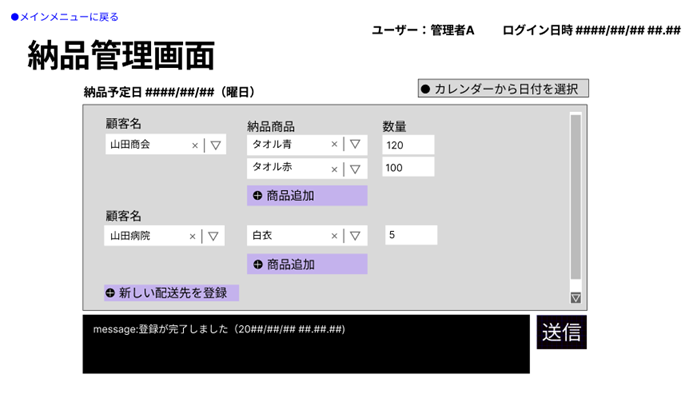
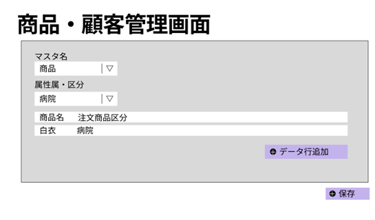
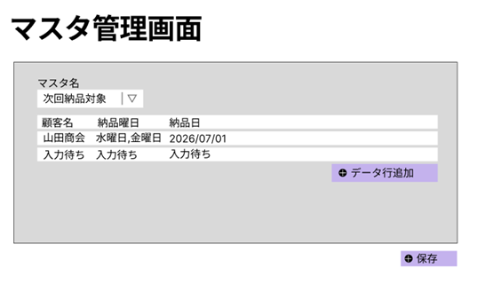

現場の「アナログな情報伝達」をITで置き換え、業務の可視化と最適化を実現するWebアプリケーションです。
システムの入り口として、セキュアな認証基盤を実装。管理者権限に応じたアクセス制限を行うことで、現場データの機密性を担保しています。



| 画面名 | 主要機能 |
|---|---|
| 納品管理画面 | 日別の納品予約管理。動的な商品追加とリアルタイムでの配送先管理を実現。 |
| 商品・顧客管理画面 | 属性区分（病院/一般など）に基づいたマスタ情報のCRUD操作。 |
| マスタ管理画面 | 次回納品対象の自動算出・カレンダー連携による納品日管理。 |